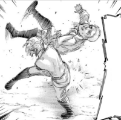

Annie Leonhart
Annie's appearance
Human form Annie is a young girl of considerably short height with a small yet very muscular build and physique. She has moderately short blonde hair that is often tied at the back with her right fringe mainly draping over the right side of her face (though she tends to push it to the side on occasion, possibly for better visibility); currently she wears it down and it falls slightly below her neck. She has an oval-shaped face, blue eyes, a Roman nose, and pale complexion. Her hair is particularly pale and, when untied, reaches down the nape of her neck. Her eyes, although of considerable size and proportion, often have a sullen vibe to their appearance. Annie's casual attire mainly consists of a hooded sweatshirt underneath a jacket accompanied by dark gray pants. She is often seen in the Training Corps uniform and then the Military Police Brigade uniform after graduation. Though Annie frequently dons hooded sweatshirts as part of her standard attire, she also wears her signature white hooded sweatshirt as part of her standard military attire. During risky missions, it is implied that she always wears her silver ring, which has a small folding blade, on her right index finger; she uses the blade as her primary means of causing self-injury to transform into her Female Titan form at any time.
Female Titan form Annie's appearance as the Female Titan changes quite drastically, though her overall physique and facial features remain mostly the same. The Titan body consists mainly of exposed muscle tissue, with noticeably limited skin coverage, and fingers made out of bone. Along with a massive difference in height from Annie's human form, its face is laden with muscle lining, notably underneath the cheeks (giving it the capability to stretch its mouth far more than it seems), along with yellowish teeth. Compared to the majority of other Titans encountered, Annie's Female Titan form seems much stronger and more physically fit, bearing a lean build with visible muscle definition. As it's name suggests, it is also the only Titan to appear physically female.
Annie's personality
Due to her harsh upbringing, Annie has become an isolated, exclusionary person; friendships do not come to her easily. She is rarely seen smiling and often has an emotionless expression. She is apathetic and somnolent, with little desire to put in any effort into meaningless disciplines or activities, and instead claims to focus exclusively on making it into the Military Police Brigade to obtain an easy life. While Annie tends to have a realistic outlook on life, she holds a fascination and even feelings of respect towards people who have a deep sense of duty and righteousness—people who devote their lives to and even die for causes they believe in. Annie's sense of humor tends to be mocking, sarcastic, deadpan, and surprising. It also sometimes expresses a partial truth, and it happens mostly in intense situations. For example, when she was cornered by the Survey Corps in front of an underground passage, she claimed that she was a feeble maiden and mocked Eren as a suicidal blockhead. Despite Annie's usually cold and calm demeanor, she is capable of expressing her feelings in various ways. At the times she does lose her composure, she usually reacts with violence. She beats up Reiner Braun for his cowardice after Marcel was eaten and for trying to manipulate her to continue a mission that had, in her view, already failed. Also, while exhausted by her spy work and constantly avoiding hand-to-hand combat training, Annie is angered when he pushes her to take the training seriously, to the point she uses her fighting style on him, despite his protests and her already having demonstrated it on Eren at Reiner's bidding. While outwardly callous, Annie has expressed levels of guilt and shock, most notably when apologizing to a certain corpse after the battle of Trost and when Reiner emotionally manipulated her to help him kill Marco.
Annie is highly intelligent, able to think deeply about situations, and has shown considerable problem-solving ability and a quick wit. These personality traits, in conjunction with her calm attitude and analytical skills, make her a good tactician. While undercover as a refugee, and later as a trainee, she does most of the spy work for the Warriors. Annie also realizes the contradictions of the military training system within the Walls and is not fooled by the Marleyan propaganda. However, she is a bad liar, being called out on this by both Eren and Kenny, the former regarding her apathy towards her martial arts prowess, and the latter when she lies about being his daughter, even sarcastically insisting further. On the other hand, she is very good at spotting the lies of other people, seen when she realizes Armin Arlert's dishonesty far before they had even reached the underground tunnel, as well as Reiner's lie about befriending their fellow trainees as being nothing more than a pragmatic attempt to gain their trust. She is extremely practical and self-aware, being honest about her strengths and weaknesses, and is rarely ever prone to self-deception or emotional mistakes. A notable example is when she recognizes her lack of skill in seduction and charm when thinking about possibly seducing a member of the Fritz family, causing her to readily dismiss the idea. Furthermore, she had a casual acceptance of her negative personality traits, freely admitting her faults even to almost-complete strangers such as Marlowe Freudenberg, calling herself worthless and evil with no hint of self-loathing. She is nevertheless capable of self-loathing. For example, she proposed to Reiner Braun and Bertolt Hoover to get close to one of the men in the Fritz family and marry into it for the sake of her mission. She also claimed to be as selfish as the Marleyan government.
Annie is very concentrated on her mission as a Warrior, to the point that she is willing to kill to reach her goal, although she is somewhat hesitant to kill former comrades and sheds tears when she fails to capture Eren. Though she is seemingly indifferent towards her capability as a hand-to-hand combat fighter, she remains proud of her skills and seems to enjoy the notion of fighting. The only time that she is seen genuinely smiling is when she expresses a curious interest in teaching Eren how to fight in her unique fighting style.
Nonetheless, what drives Annie more than anything is her desire for a normal life. Though she has no love for Marley itself, the only reason she is so concentrated on her mission is that it because it would allow her to go back home to her father, and she had urged Reiner several times before her eventual capture to return to Marley with the information they had gathered so far; despite her otherwise cynical and realist worldview, Annie managed to convince herself of the false notion that it would be enough to avoid punishment. When she lost Eren due to the actions of both Mikasa and Levi in the Titan Forest, Annie saw the easiest chance to return to her father was gone and she began visibly crying in her Titan form. After escaping her confinement, Annie undergoes a significant change in character, becoming more open about working with her former friends to stop the actions of Eren and the Yeagerists. She also freely acknowledges to Hitch that she has committed unforgivable acts, something Annie normally would have kept to herself. Later, as the Wall Titans ravage through Marley, she admits to Armin that she genuinely appreciated him visiting her for the four years she was enclosed inside her crystal. Annie also tells him she sees herself as nothing more than a monster.
Annie's history
 After Annie's birth, her blood test revealed she was a Subject of Ymir, which suggested her mother had an affair with an Eldian man. While it is unknown what happened to her mother, Annie was deported to an internment zone and later adopted by Leonhart who was relocated for similar reasons. Her adoptive father intended to train her to become a Warrior so that he could live a privileged life. Thus, from a young age, Annie underwent rigorous combat training with Leonhart. Annie would eventually become as strong as he wanted; but in retaliation for all she had endured, she attacked him and left him permanently crippled. The brutal training she endured left her callous towards others, unable to find any value in whether one lived or died.
At some point in her childhood, Annie joined the Marleyan military as a Warrior candidate, meeting comrades such as Bertolt Hoover, Reiner Braun, and Marcel Galliard. Annie was praised as impeccable for her fighting abilities and was later chosen as one of seven promising candidates to inherit the power of the Titans. She was later granted the power of the Female Titan in accordance with her stellar combat skills. Alongside the rest of her Warrior comrades, the six Titans in Marley's command used their powers to crush an entire nation, testing their abilities in the process. The six Warriors proved themselves to be more effective weapons than their predecessors, largely alleviating Marley's concerns about entrusting the upcoming Paradis Island Operation to children.
Annie was selected as one of the four Warriors to carry out this mission, along with the Jaw, Armored and Colossus Titans. The objective of the mission was to attack the Eldians living in the Walls and lure out and steal the Founding Titan. Before leaving Marley to begin the Paradis Island Operation, Annie was paraded through the streets in a horse-drawn carriage with Reiner, Bertolt, and Marcel and celebrated as a Warrior to save the world from the people of Paradis Island.[51] Around this time, Leonhart apologized to Annie. Finally seeing her as his true daughter, he regretted his actions in making her become a Warrior and begged her to promise him to come home. After arriving at the border of Paradis Island, Magath gave a final debriefing to the Warriors before they departed for the Walls on horseback.
MEMES
|
|
|
|
|
|
|
|